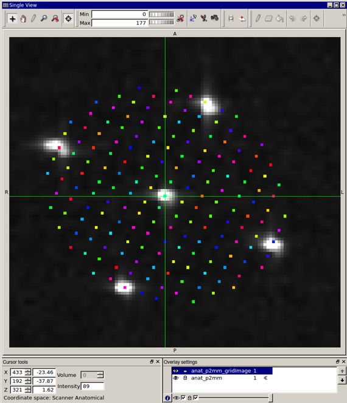
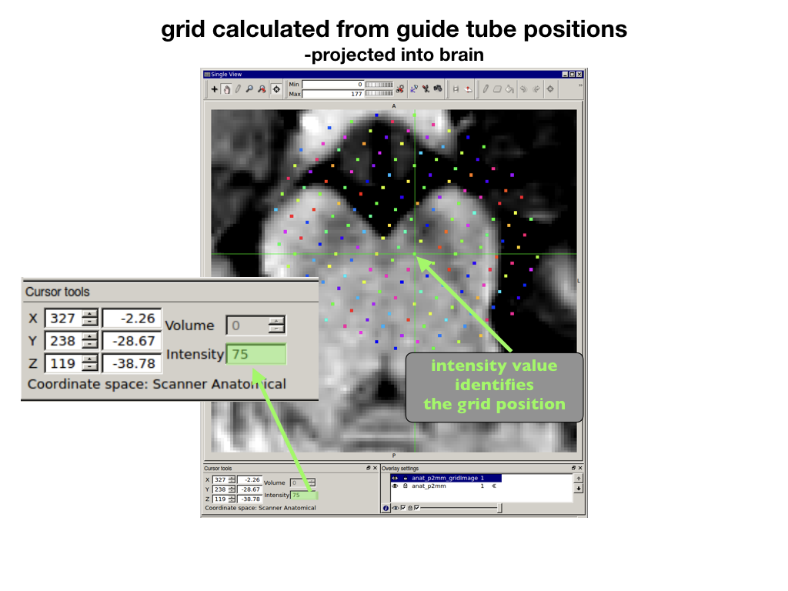

*_gridImage.nii

calculates agrid and projects it through the brain.
based on position of 3 or more guide tubes

current working directory
currDIR = '/data/fmri_monkey_03/PROJECT/codeshare/example/surgery/guideTube_outsideBrain_p2mm/';
specify location of guide tube mask and anatomy
guideTubeMask_imageName = [currDIR,'/trajPoints_1to5_p2mm.nii'];
anat_imageName = [currDIR,'/anat_p2mm.nii'];
guideTube_greater
specify whether to look for hyperintense (bright) or hypointense (dark) guide tube voxels:
-voxels > threshold; guideTube_greaterThen = 1
-voxels < threshold; guideTube_greaterThen = 0
guideTube_greaterThen = 1;
guideTube_threshold specify the threshold to be used to determine which voxels within the mask are guide tube voxels.
guideTube_threshold = 200;
find center of guide tube using the mean position weighted by voxel intensity
weightedMean = 1;
definition of grid positions of each guide tube mask
-mask with valune
n
in guideTubeMask_imageName
should be speicifed with gridpos(
n
)
clear gridpos
gridpos(1).positionNameAP = 'C';
gridpos(1).positionNameLM = 'C';
gridpos(2).positionNameAP = '7A';
gridpos(2).positionNameLM = 'C';
gridpos(3).positionNameAP = '7P';
gridpos(3).positionNameLM = 'C';
gridpos(4).positionNameAP = 'C';
gridpos(4).positionNameLM = '7L';
gridpos(5).positionNameAP = 'C';
gridpos(5).positionNameLM = '7M';
define grid positions that are in the same:
-LM = lateral to medial line
-AP = same anterior to posterior line
gridpos_same_LM = [1 2 3];
gridpos_same_AP = [1 4 5];
dimOrder change order of dimensions to [1=Coronal, 2= Transverse, 3 = Sagittal]
-example below flips the 2 and 3 dimensions
dimOrder = [1 3 2];
flipVals - flip volume orders so dimensions increase from: [dorsal-ventral anterior-posterior left-right]
-example below flips the d-v and the l-r dimensions
flipVals = [1 1 1];
checkVolOrientation make sure volume in correct orientation
necessary for further calculations!
checkVolOrientation(Anat_imageName,dimOrder,flipVals);
makes grid image
makeGridImage(anat_imageName,guideTubeMask_imageName,dimOrder,flipVals,guideTube_greaterThen,guideTube_threshold,gridpos,gridpos_same_LM,gridpos_same_AP,weightedMean);
grid calulated from guidetubes and projected into brain
*_gridImage.nii
use grid number from *_gridImage.nii
to find grid position in A-P and L-M

converts number to grid position
findGridPos_fromVal(75);